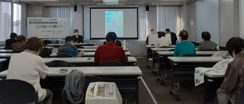

埼玉県委託事業 県内消費者団体地区別研修会①報告
「みどりの食料システム戦略について」を開催しました
2022年12月7日（水）10時30分より、県内消費者団体地区別研修会①を、東上パールビルヂング川越で開催し、会場21人・オンライン7人計28人が参加しました。
参加：12団体28人（埼玉県地域婦人会連合会、新日本婦人の会埼玉県本部、埼玉県生活協同組合連合会、生活協同組合コープみらい、埼玉消費者被害をなくす会、新座市消費者団体連絡会、狭山市消費者団体連絡会、埼玉県西部地区消費者団体活動推進世話人会、行田市くらしの会、志木市くらしの会、さいたま市消費者団体連絡会、埼玉県消費者団体連絡会、一般）
講師：関東農政局消費・安全部部長 西村 裕二さん

講師の関東農政局西村裕二さんから、だれ一人取り残されることなく、将来にわたって健康で安全な食をみんなが享受できるよう、環境に優しく持続可能な生産～消費を実現する「みどりの食料システム戦略」についてお話しいただきました。毎日当たり前に食べている食事が、環境にどのように影響しているのかを知り、何を選んでどう食べるべきか、地球温暖化が進むなか、持続可能な食料システムの構築について、温室効果ガスの排出を減らす取り組み、吸収を増やす取り組み、地球温暖化に適応した作物づくり、さらには2050年までに目指す姿などについて説明いただきました。さらに、そのような中、エシカル消費、食品ロスの削減、有機食品を選ぶ、地産地消を実践する、食料自給率を上げるなど、私たちにできることについて説明いただきました。質疑応答では、会場からもオンラインでも活発に質問が寄せられ、西村さんから丁寧にお答えいただきました。
参加者からは、「外国から買えばいい、ではもう立ちいかなくなってることがわかった」「参加者の意識が高く、質疑応答も自分とは違う視点だったので興味深かった」などの声が寄せらました。